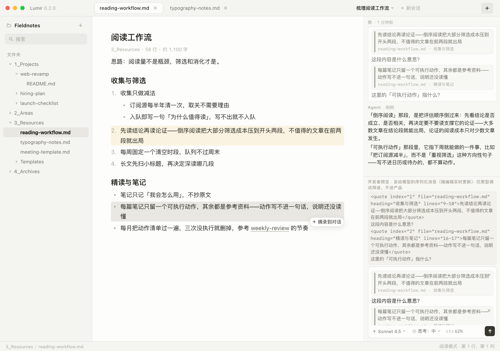

点击链接打开可交互原型（可切换 ?screen= 与 ?theme=light|dark|eink）。截图为 1280×900 @2x。设计准绳：design-brief-v1.md（在仓库内阅读）。
原型页右下角有内置控制面板，点击即可切屏/切主题；下方链接为深链。
屏1 单 pane 骨架 · 屏2 双 pane 等宽 · 屏3 分隔条拖拽 · 屏4 harness 对话 · 屏5 摘录卡片 · 屏6 上下文用量 · 屏7 新建会话 · 屏8 复制消息 · 屏9 思考过程 · 屏10 思考程度 · dark · eink
